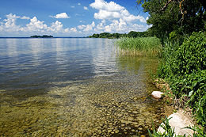

Озеро Нарочь
Нарочь — озеро в Мядельском районе Минской области.
Самое большое озеро в Беларуси.
Входит в Нарочанскую группу озёр (Мястро, Баторино, Бледное).
Площадь — 79,6 кв.км. Наибольшая глубина — 24,08 м.
В Нарочи обитает двадцать 22 вида рыб (в том числе угорь), из них наиболее крупная — щука.
На озере и в округе имеются гнездовья лебедя-шипуна, малой крачки, скопы, малой поганки.
Главная страница - озёра Беларуси